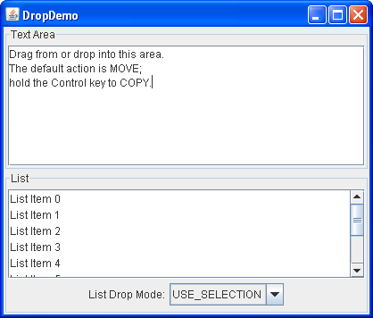

Lección: Arrastrar y Soltar y Transferencia de Datos
Sección: Estableciendo el Modo Soltar
Demostración - DropDemo
Ahora veremos una demostración que usa un manejador de transferencia personalizada para implementar el gesto de soltar para un componente de lista. Aunque el manejador de transferencia predeterminado para la lista implementa la exportación, debido a que estamos creando un manejador de transferencia personalizado para implementar la importación, tendremos que reimplementar también la exportación.
Como ve en la captura de pantalla, DropDemo contiene un área de texto editable, una lista, y una
caja combo que le permite seleccionar el modo de suelta para la lista.

Intente esto:
-
Pulse el botón Lanzar para ejecutar
DropDemousando Java™ Web Start ( descargue KDJ 7 o posterior). Alternativamente, para compilar y ejecutar el ejemplo por usted mismo, consulte el índice de ejemplos.
-
Seleccione algunos textos en el área de texto y suéltelos sobre la lista. La entrada seleccionada de la
lista es reemplazada y ese elemento se convierte en la selección actual. Esto es como
USE_SELECTIONfunciona y se ofrece por compatibilidad hacia atrás pero es de otra forma no recomendado. -
Cambie el Modo de Soltado de la Lista a
ONe intente la misma acción. Una vez de nuevo, el elemento de la lista seleccionada es reemplazado, pero la selección actual no se mueve. -
Cambie el Modo de Soltado de la Lista a
INSERTy repita la misma acción. El texto agregado es insertado en la ubicación de soltado. En este modo no es posible modificar los elementos existentes en la lista. -
Cambie el Modo de Soltado de la Lista a
ON_OR_INSERT. Dependiendo de la posición del cursor, puede insertar el nuevo texto o puede reemplazar el texto existente.
Aquí está la implementación de
ListTransferHandler para
DropDemo.java.
El manejador de transferencia para esta lista soporta copiar y mover y reimplementa el soporte de arrastre que la lista ofrece de manera predeterminada.
public class ListTransferHandler extends TransferHandler {
private int[] indices = null;
private int addIndex = -1; //Lugar donde se agregaron los artículos
private int addCount = 0; //Número de elementos agregados.
/**
* Nosotros sólo soportamos la importación de cadenas.
*/
public boolean canImport(TransferHandler.TransferSupport info) {
// Comprobamos el sabor de Cadenas
if (!info.isDataFlavorSupported(DataFlavor.stringFlavor)) {
return false;
}
return true;
}
/**
* Agrupa los elementos seleccionados en una sola lista para exportar.
* Cada línea se separa por un retorno de carro.
*/
protected Transferable createTransferable(JComponent c) {
JList list = (JList)c;
indices = list.getSelectedIndices();
Object[] values = list.getSelectedValues();
StringBuffer buff = new StringBuffer();
for (int i = 0; i < values.length; i++) {
Object val = values[i];
buff.append(val == null ? "" : val.toString());
if (i != values.length - 1) {
buff.append("\n");
}
}
return new StringSelection(buff.toString());
}
/**
* Soportamos las acciones de copiar y mover.
*/
public int getSourceActions(JComponent c) {
return TransferHandler.COPY_OR_MOVE;
}
/**
* Realiza la importación real. Esta demostración solo admite arrastrar y soltar.
*/
public boolean importData(TransferHandler.TransferSupport info) {
if (!info.isDrop()) {
return false;
}
JList list = (JList)info.getComponent();
DefaultListModel listModel = (DefaultListModel)list.getModel();
JList.DropLocation dl = (JList.DropLocation)info.getDropLocation();
int index = dl.getIndex();
boolean insert = dl.isInsert();
// Tomamos la cadena que está siendo soltada.
Transferable t = info.getTransferable();
String data;
try {
data = (String)t.getTransferData(DataFlavor.stringFlavor);
}
catch (Exception e) { return false; }
// Siempre que haya una nueva línea en los datos entrantes,
// divídala en un elemento separado en la lista.
String[] values = data.split("\n");
addIndex = index;
addCount = values.length;
// Realizamos la importación real.
for (int i = 0; i < values.length; i++) {
if (insert) {
listModel.add(index++, values[i]);
} else {
// Si los elementos van más allá del final de la
// lista actual, agréguelos.
if (index < listModel.getSize()) {
listModel.set(index++, values[i]);
} else {
listModel.add(index++, values[i]);
}
}
}
return true;
}
/**
* Elimina los elementos movidos de la lista.
*/
protected void exportDone(JComponent c, Transferable data, int action) {
JList source = (JList)c;
DefaultListModel listModel = (DefaultListModel)source.getModel();
if (action == TransferHandler.MOVE) {
for (int i = indices.length - 1; i >= 0; i--) {
listModel.remove(indices[i]);
}
}
indices = null;
addCount = 0;
addIndex = -1;
}
}
A continuación vemos cómo el destino puede elegir la acción de soltado.